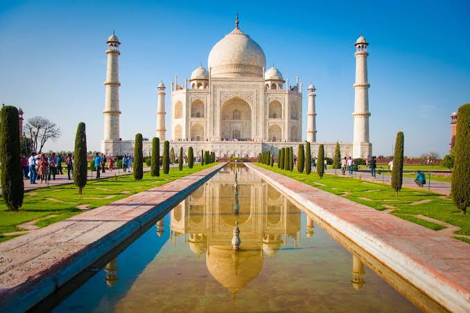
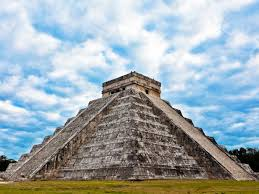
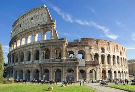
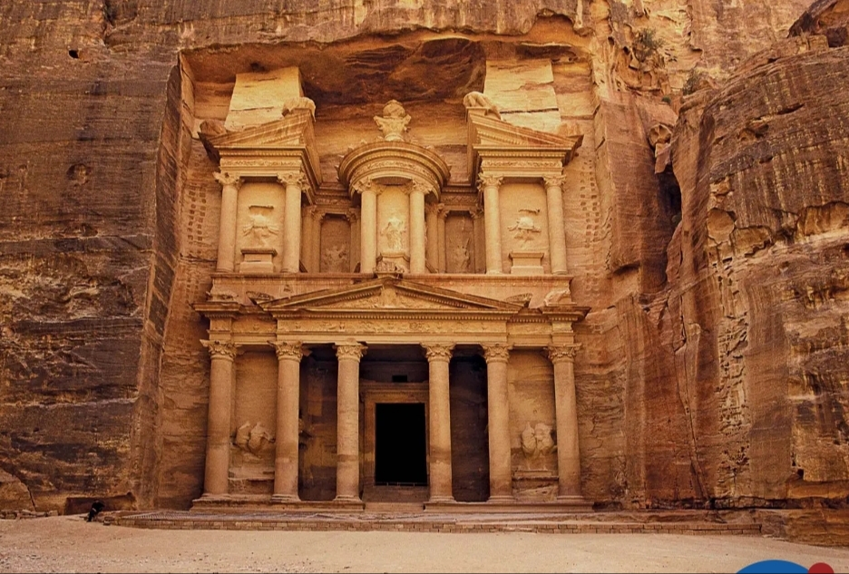
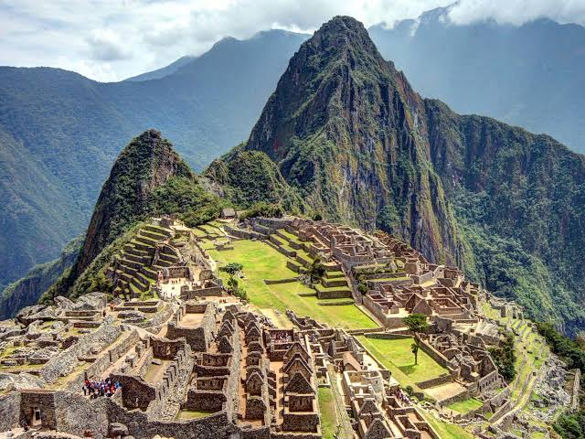

Taj Mahal
Taj Mahal is a mausoleum in Agra, India on the banks of the river Yamuna. It is one of the most beautiful buildings of the world and it is a symbol of endless love. It's made of very special marble which can change colour. On bright daylight it looks white, in the morning it becomes pink and on a moonlight night metallic. The mausoleum has a central hall with acoustics and eight- side rooms. Inside the mausoleum are the tombs of Shah and his wife. The marble walls have inlaid semi-precious stones.
.Christ the Redeemer

Christ the Redeemer is a giant statue built from 1922 to 1931. It was designed and built by the Brazilian architect and engineer Heitor da Silva Costa. The French sculptor Paul Landowski also helped build the statue and they received donations from catholics. It's 38m tall and and its arms stretch 28m wide. Through the years it suffered a lot of damage and has become one of the seven wonders as the years passed.
Chichen Itza
Chichen Itza is a huge town, made of stone where Mayans did a lot of rituals. It was discovered by Christophur Columbus in Yucatan Mexico. Chichen Itza means "at the mount of the well Itza".The place was used for astronomical sciences and calender. In those times there wasn't much water and the Mayans used to use the water from one lake in Chichen Itza called The Sacred Cenote. The human bones and gold which were found there show that ancient people used the lake for religious rituals in which they made sacrifices.
The Colosseum
The Colosseum is the most famous monument to have survived from the ancient world. It's also known as the Flavian Amphitheatre and is an elliptical amphitheatre in the central city Rome, Italy. It was built of concrete and stone. It's nearly two thousand years old and was used for violent gladiator games. It was the longest amphitheatre of the Roman Empire and it's one of the greatest works of the Roman architecture. In 2007 the building complex was included among the new seven wonders of the world.
China Wall

The construction of The Great Wall of China began in the 4 th century BC. Over the next 2300 years more than 20 Chinese dynasties worked to make it stronger and to create the largest facility for military use in the world. The Quing Dynasty and Han Min built the largest contribution (more than 6000km). A section of the wall in the Gansu province may disappear in the next 20 years. Now the wall is one of the new seven wonders and is visited by thousands of tourists.
Petra
The ancient town of Petra is carved into the rock walls of sandstone of one canyon in the desert. More than 2000 ago former Nabateans arrived in Jordan and turned the desert area into a rich capital city. It took them four centuries to do that. Now that glorious place is one of the new seven wonders and it attracts more than half million people per year.
Machu Picchu
Machu Picchu is a small city built by the Incas in the fifteenth ventury.The city is located in the present day city of Peru on the Andes.The other name of Machu Picchu is "the Lost City of the Incas".The town was found in 1911 by the American archaeocologist Hiram Bingam. In Machu Picchu there are about 200 structures. It is a mystery how Incas transported the huge boulders to the top of the mountain to built the city.Leave a reply
Your email address will not be published. Required fields are marked *